代码组及其含义 “模态代码” 和 “一般” 代码 “形式代码” 的功能在它被执行后会继续维持，而 “一般代码” 仅仅在收到该命令时起作用。定义移动的代码通常是“模态代码”，像直线、圆弧和循环代码。反之，像原点返回代码就叫“一般代码”。 每一个代码都归属其各自的代码组。在“模态代码”里，当前的代码会被加载的同组代码替换。 |
||||||||||||||||||||||||||||||||||||||||||||||||||||||||||||||||||||||||||||
|
G00 快速定位指令 |
|
G01 直线插补 |
用来单轴或二、三、四轴联动的插补加工切削。 |
G02/G03 圆弧插补 (G02, G03) |
用来在指定平面上，进行G02顺圆(顺时针方向)或G03逆圆(逆时针方向)的圆弧插补切削。
图1 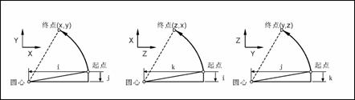 图2 圆弧插补的插补速度由程序中F字段指定。 注意：I，J，K和R均为非模态指令。 示例: 1)绝对编程 N0000 G92 X200 Y40 Z0;设起刀点绝对坐标位置 N0010 G90 G03 X160 Y40 I-20 J0 ;逆圆弧 N0020 G02 X120 Y40 R20;顺圆弧 N0030 G02 X120 Y40 R20 J0;整圆 N0040 G26 M02 ;回起点结束 2)相对编程 N0000 G91 G17 G03 X-40 Y0 R20 F300 ;逆圆弧 N0010 G02 X-40 Y0 R20 ;顺圆弧 N0020 G02 X0 Y0 I20 J0 ;整圆 N0030 G26 M02 ;回起点结束 两种编程方式效果是一样的。 螺旋插补指令(G02/G03) 螺旋移动的螺旋线插补可指定一个与圆弧插补轴同步移动的其它轴。 指令方法只是简单地加上一个不是圆弧插补轴的移动轴，F 指令指定沿圆弧的进给速度。因此直线轴的进给速度为: 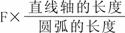 指令格式：G02(G03) X- Y- I- J- Z- F- ;XY平面(模态) G02(G03) Z- X- K- I- Y- F- ;ZX平面(模态) G02(G03) Y- Z- J- K- X- F- ;YZ平面(模态) 刀具半径补偿只对圆弧进行，在指令螺旋线插补的程序段中不能指令刀具偏置和刀具长度补偿。 图示: 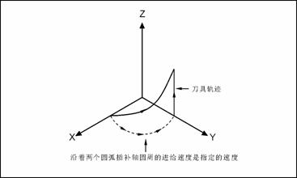 图3
|
G04延时指令 |
用来在加工过程中因加工工艺需要，延时一定时间再执行其它动作。 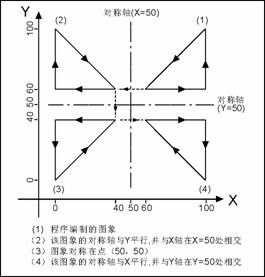 图4 镜像程序举例 子程序 %9000 G00 G90 X60.0 Y60.0; G01 X100.0 F100; G01 Y100.0; G01 X60.0 Y60.0; M99; 主程序 N10 G00 G90; N20 M98 P%9000; N30 G11 X50.0 N40 M98 P%9000; N50 G11 X50.0 Y50.0 N60 M98 P%9000; N70 G11 Y50.0 N80 M98 P%9000; N90 G12;
用于不改变加工程序的情况下，按比例缩小或放大加工出的工件。编程的形状被放大和缩小( 比例缩放),用X_,Y_和Z_指定比例缩放中心。若某一轴未指定，则该轴不执行比例缩放。X_ Y_ Z_后的数值为当前工件坐标系下的坐标。 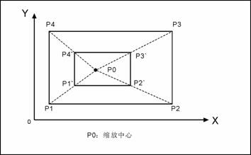 图5 比例缩放对刀具半径补偿值、刀具长度补偿值和刀具偏置值无效: 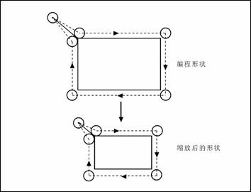 图6 |
坐标系旋转指令G68/G69 |
编程形状能够旋转，用该旋转指令可将工件旋转某一指定的角度。另外，如果工件的形状由许多相同的图形组成，则可将图形单元编成子程序，然后用主程序的旋转指令调用。这样可简化编程，节省存储空间。
说明：G68后的(G17)X-Y-或(G18)Z-X-或(G19)Y-Z-指定旋转中心 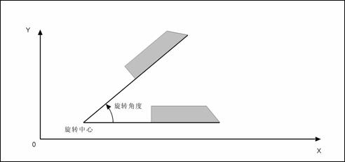 图7 在坐标系旋转代码G68 的程序段之前指定平面选择代码(G17G18 或G19), 平面选择代码不能在坐标系旋转方式中指定。取消坐标系旋转方式的代码G69 必须单独占一程序段。在坐标系旋转之后,执行刀具半径补偿,刀具长度补偿,刀具偏置和其它补偿操作. 在坐标系旋转方式中,与返回参考点有关G 代码（G28, G30 等）和那些与坐标系有关的G 代码(G52 到G59 ,G92等)不能指定,如果需要这些G 代码,必须在取消坐标系旋转方式以后才能指令。坐标系旋转取消指令G69 以后的第一个移动指令必须用绝对值指定，如果用增量值指令,将不执行正确的移动。 例1: 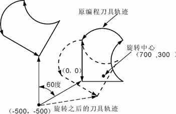 图8 N1 G92 X-500Y-500F2000 G17; N2 G68 X700Y300R60; N3 G90 G01 X0 Y0 F2000; N4 G91 X1000 N5 G02 Y1000 R1000 N6 G03X-1000I-500J-500; N7 G01Y-1000 N8 G69 G90 X-500Y-500 M02;
|
刀具半径补偿G43，G44，G49 |
1.格式：{G17/G18/G19}{G40/G41/G42}{G00/G01}X_Y_Z_D_
|
增减刀具半径指令(G45/G46/G47/G48) |
用于沟槽等工件的加工时，编程按工件图纸尺寸编制，指令行中加上这组指令之一。就可在不同刀具半径时加工出符合图纸尺寸的产品。
说明：增减刀具半径指令，是在执行中增加或减少一个或两个用T编号调用的刀具半径参数值。还要和XY（G17），ZX（G18），YZ（G19）平面上的G00、G01、G02、G03指令连用。不能和刀具半径补偿指令(G41，G42)混用。 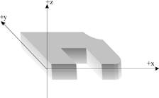 �� 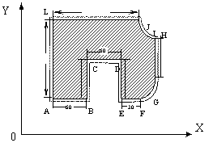 图4.17
�� |
| 刀具半径补偿指令（G40/G41/G42） |
当刀具移动时，刀具轨迹可以偏移一个刀具半径。为了偏移一个刀具半径，CNC 首先建立长度等于刀具半径的偏置矢量，即起刀点。偏置矢量垂直于刀具轨迹。矢量的尾部在工件上而头部指向刀具中心。如果在起刀之后指定直线插补或圆弧插补，在加工期间刀具轨迹可以用偏置矢量的长度偏移。在加工结束时，为使刀具返回到开始位置，须取消刀具半径补偿方式。 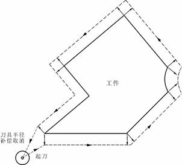 图11
说明：G41/G42中的左侧或右侧是指沿切削方向看，刀具在工件的左侧或右侧。刀具半径值用T1-T99调用。执行偏置是在G41/G42所在程序行开始。尖角处由系统自动产生过渡直线，使上一程序段终点的刀具半径偏移矢量过渡到下一程序段的起点的刀具半径偏移矢量、刀偏矢量是描述刀具偏移的数值和方向的方法。它的矢径为刀具半径。对于圆弧来说它的方向在半径方向。对于直线来说它的方向在直线的垂直方向。 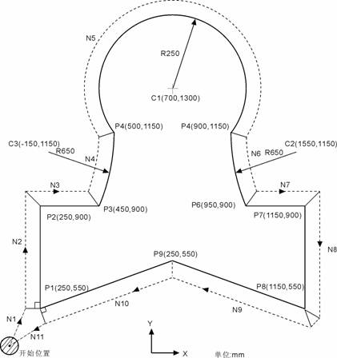 图12 G54 X0 Y0 Z0 ；指定绝对坐标值刀具定位在开始位置X0 Y0 Z0 G90 G17 G00 G41 T15 D2 X250.0 Y550.0 ； 开始刀具半径补偿起刀， 刀具用T15号刀的刀沿号D2 指定的距离偏移到编程轨迹的右边。 G01 Y900.0 F150 ；从P1 到P2 加工 X450.0 ；从P2 到P3 加工 G03 X500.0 Y1150.0 R650.0 ；从P3 到P4 加工 G02 X900.0 R-250.0 ；从P4 到P5 加工 G03 X950.0 Y900.0 R650.0 ；从P5 到P6 加工 G01 X1150.0 ；从P6 到P7 加工 Y550.0 ；从P7 到P8 加工 X700.0 Y650.0 ；从P8 到P9 加工 X250.0 Y550.0 ；从P9 到P1 加工 G00 G40 X0 Y0；取消偏置方式刀具返回到 开始位置X0,Y0,Z0 |
程序循环指令（G22-G800） |
用来编制具有重复动作和重复运动走向的加工程序
说明：G22和G800在程序中必须成对使用，在G22和G800之间可以嵌套，可以子程序调用，循环次数由L2字段指定。G22和G800指令 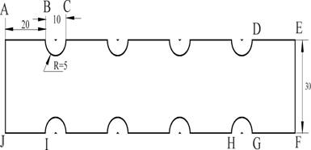 是独立指令。G22到G800之间，编写需要重复运行的程序段组成的循环体，运行时将重复运行循环体程序的内容。 例： 图13 程序如下： N0000 G17 G90 X0 Y0 F250 M03 ;设置程序运行的开始状态 N0001 G91 G01 Z-10 N0010 G22 L4;循环体开始，指定循环体循环四次 N0020 G01 X20;循环体内容：A-B直线 N0030 G03 X10 I5 J0 Y0 ;B-C逆半圆 N0040 G800 ;循环结束 N0050 G01 X20 ;D-E直线 N0060 Y-30 ;E-F直线 N0070 G11 X140 Y-30 ;设置X Y轴镜像 N0080 G22 L4;循环体开始，指定循环体循环四次 N0090 G01 X20 ;F-G直线 N0100 G03 X10 I5 ;G-H逆圆弧 N0110 G800 ;循环结束 N0120 G01 X20 ;I-J直线 N0130 G01 Y-30 ;取消镜像 N0140 G12 ;J-A直线 N0150 G26 ;回程序起点 N0160 M02 ;程序结束 |
准确定位/连续路径加工(G60/G64) |
根据加工工艺的要求，可以通过G60/G64指令指定程序段之间的连接方式。 |
固定循环宏定义指令（G73、G74、G76、G80～G89） |
用固定循环可使频繁使用的加工操作用G功能在单程序段中指令，否则,要求多个程序段。而且固定循环能缩短程序,节省内存,使编程员编程变得容易。
固定循环由6个顺序的动作组成 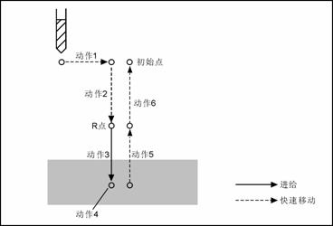 图14 沿着钻孔轴的移动距离对G90 和G91 变化如下: 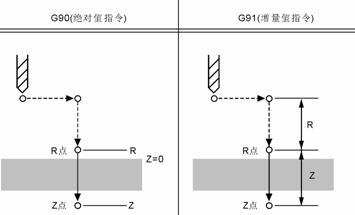 图15 当刀具到达孔底后,刀具可以返回到R 点平面或初始位置平面,由G98 和G99 指定,下图表示指定G98 或G99 时的刀具移动.一般情况下,G99 用于第一次钻孔而G98 用于最后钻孔.即使在G99 方式中执行钻孔初始位置平面也不变。 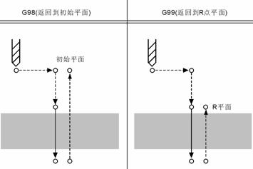 图16 在L中指定重复次数, 在相同位置重复钻孔。L仅在被指定的程序段内有效。重复次数L最大指令值=9999。默认为L=1; 定位平面由G17(XY)/G18(ZX)/G19(YZ)决定。
|
高速深孔钻循环(G73) |
该循环执行高速深孔钻，它执行间歇切削进给直到孔的底部, 同时从孔中排除切屑。
图示: 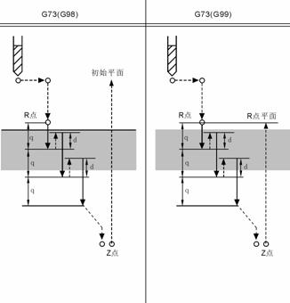 图17 说明： 高速深孔钻循环沿着Z 轴执行间歇进给,当使用这个循环时,切屑可以容易从孔中排出,并且能够设定较小的回退值。这允许有效地执行钻孔。在其余参数中的10号参数设定刀具快速移动退回的退刀量d。 在指定G73 之前用辅助功能旋转主轴(M 代码)。 当在固定循环中指定刀具长度偏置(G43、G44 或G49)时，在定位到R 点的同时加偏置，刀具半径偏置被忽略。 示例: M3 S2000 ；主轴开始旋转 G90 G99 G73 X300 Y-250 Z-150 R-100 Q15 F120 ；定位, 钻1孔, 然后返回到R点 Y-550 ；定位, 钻2孔, 然后返回到R点 Y-750 ; 定位, 钻3孔, 然后返回到R点 X1000 ; 定位, 钻4孔, 然后返回到R点 Y-550; 定位, 钻5孔, 然后返回到R点 G98 Y-750 ; 定位, 钻6孔, 然后返回初始位置平面 G80 M5 ; 主轴停止旋转 |
左旋攻丝循环(G74) |
前提条件为主轴驱动必须具有位置伺服控制功能。
图示: 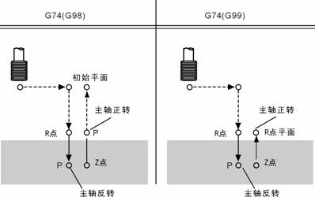 图18 说明： 在加工螺纹时坐标轴速度由主轴转速和螺距确定，而与进给速度F值没有关系。系统自动将坐标轴速度限制在最大进给速度之内。 跟踪方式加工螺纹时，主轴倍率开关和进给轴倍率开关无效。 在每一螺纹加工程序段都应指定螺纹导程K值，否则，无法通过编译。 用主轴逆时针旋转执行攻丝。当到达孔底时，为了退回主轴顺时针旋转。该循环加工一个反螺纹。对于跟踪方式攻丝，在左旋攻丝期间，进给暂停不停止机床，直到回退动作完成。 在指定G74之前使用辅助功能M 代码使主轴逆时针旋转。当主轴为脉冲控制方式时，不需用辅助功能M 代码旋转主轴。 当在固定循环中指定刀具长度偏置(G43、G44 或G49)时，在定位到R 点的同时加偏置。刀具半径偏置被忽略。 示例： M4 S100 ；主轴开始旋转(当主轴为脉冲控制方式时，可不需要M3/M4) G90 G99 G74 X300 Y-250 ?Z-150 R-100 K5 S100 ；定位, 攻丝1孔, 然后返回到R点 Y-550 K5; 定位, 攻丝2孔, 然后返回到R点 Y-750 K5 ; 定位, 攻丝3孔, 然后返回到R点 X1000 K5 ; 定位, 攻丝4孔, 然后返回到R点 Y-550 K5 ; 定位, 攻丝5孔, 然后返回到R点 G98 Y-750 K5 ; 定位, 攻丝6孔, 然后返回初始位置平面 G80 M5 ; 主轴停止旋转
|
精镗循环(G76) |
因为主轴需要定向停止功能，所以前提条件为主轴必须具有定位功能。 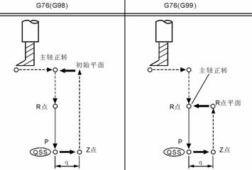 图19 说明： 当到达孔底时，主轴在固定的旋转位置停止，并且刀具以刀尖的相反方向移动退刀。这保证加工面不被破坏，实现精密和有效的镗削加工。 注：主轴定向角度和刀具退刀方向在其余参数中设置 在指定G76 之前用辅助功能M 代码旋转主轴。 当在固定循环中指定刀具长度偏置(G43、G44 或G49)时在定位到R 点的同时加偏置，刀具半径偏置被忽略。 示例： M3 S500 ；主轴开始旋转 G90 G99 G76 X300 Y-250 ；定位, 镗1孔, 然后返回到R点 Z-150 R-100 Q5 ；孔底定向然后移动5mm Y-550 ; 定位, 镗2孔, 然后返回到R点 Y-750 ; 定位, 镗3孔, 然后返回到R点 X1000 ; 定位, 镗4孔, 然后返回到R点 Y-550 ; 定位, 镗5孔, 然后返回到R点 G98 Y-750 ; 定位, 镗6孔, 然后返回初始位置平面 G80 M5 ; 主轴停止旋转
|
G74反攻丝循环 |
1.格式： |
G76精镗循环 |
1.格式：
|
G81钻孔循环(中心钻) |
1.格式：
|
G82带停顿的钻孔循环 |
1.格式：
|
钻孔循环，点钻循环(G81) |
该循环用作正常钻孔，切削进给执行到孔底。然后，刀具从孔底快速移动退回。
图示: 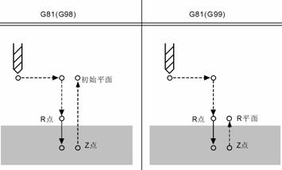 图20 说明： 在沿着X 和Y 轴定位以后快速移动到R 点,从R 点到Z 点执行钻孔加工,然后刀具快速移动退回. 在指定G81之前用辅助功能M 代码旋转主轴 当在固定循环中指定刀具长度偏置(G43、G44或G49)时在定位到R 点的同时加偏置，刀具半径偏置被忽略。 示例： M3 S2000 ；主轴开始旋转 G90 G99 G81 X300 Y-250 Z-150 R-100 F120 ；定位, 钻1孔, 然后返回到R点 Y-550 ; 定位, 钻2孔, 然后返回到R点 Y-750 ; 定位, 钻3孔, 然后返回到R点 X1000 ; 定位, 钻4孔, 然后返回到R点 Y-550 ; 定位, 钻5孔, 然后返回到R点 G98 Y-750; 定位, 钻6孔, 然后返回初始位置平面 G80 M5 ; 主轴停止旋转
|
钻孔循环,锪镗循环(G82) |
该循环用作正常钻孔，切削进给执行到孔底，执行暂停。然后刀具从孔底快速移动退回。
图示: 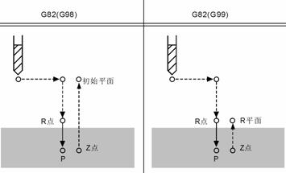 图21 说明： 沿着X和Y轴定位以后，快速移动到R点。然后从R点到Z点执行钻孔加工。当到底孔底时，执行暂停。然后刀具快速移动退回。 指定G82之前，用辅助功能M代码旋转主轴。 当在固定循环中指定刀具长度偏置(G43、G44或G49)时在定位到R点的同时加偏置。刀具半径偏置被忽略。 示例： M3 S2000 ；主轴开始旋转 G90 G99 G82 X300 Y-250 Z-150 R-100 P1000 F120 ;定位, 钻1孔, 然后返回到R点 Y-550 ; 定位, 钻2孔, 然后返回到R点 Y-750 ; 定位, 钻3孔, 然后返回到R点 X1000 ; 定位, 钻4孔, 然后返回到R点 Y-550 ; 定位, 钻5孔, 然后返回到R点 G98 Y-750 ; 定位, 钻6孔, 然后返回初始位置平面 G80 M5 ; 主轴停止旋转
|
排屑钻孔循环 (G83) |
执行间歇切削进给到孔的底部钻孔过程中从孔中排除切屑
图示: 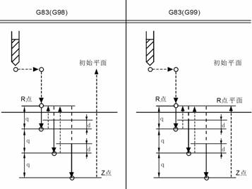 图22 说明： Q 表示每次切削进给的切削深度，它必须用增量值指定。在第二次和以后的切削进给中，执行快速移动到上次钻孔结束之前的d 点再次执行，切削进给d在其余参数中第11号参数设定，在Q 中必须指定正值，负号被忽略。 指定G83之前，用辅助功能M 代码旋转主轴。 当在固定循环中指定刀具长度偏置(G43、G44 或G49)时，在定位到R点的同时加偏置， 刀具半径偏置被忽略。 示例： M3 S2000 ；主轴开始旋转 G90 G99 G83 X300 Y-250 Z-150 R-100 Q15 F120 ；定位, 钻1孔, 然后返回到R点 Y-550 ; 定位, 钻2孔, 然后返回到R点 Y-750 ; 定位, 钻3孔, 然后返回到R点 X1000 ; 定位, 钻4孔, 然后返回到R点 Y-550 ; 定位, 钻5孔, 然后返回到R点 G98 Y-750 ; 定位, 钻6孔, 然后返回初始位置平面 G80 M5 ; 主轴停止旋转
|
G86镗孔循环 |
G86 指令与G81 相同，但在孔底时主轴停止，然后快速退回。 |